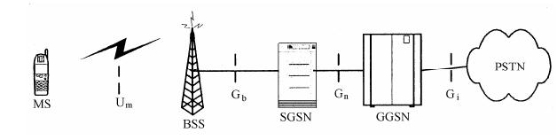
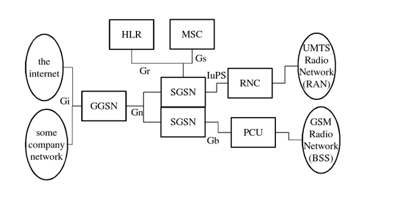

Basic knowledgement: GSM/GPRS
1. GSM
Global System for Mobile Communications
2. GPRS
General Packet Radio Service GPRS is a packet data carrying and transmission service developed on the basis of the GSM system. GSM is a circuit switching system, and GPRS is a packet switching (packet switching) system.
About GPRS, here is a brief introduction to some of its simple and important knowledge. More details, please find information to study
（1）GPRS classify of service
There's three typs:Class A/B/C，
Class A: it can support both circuit switching and packet switching, that is, simultaneous telephone and Internet access.
Class B: support for circuit switching and packet switching, but only one at the same time.
Class C: only support packet switching
（2）GPRS Transmission Classify
The GPRS network assigns a maximum of 8 timeslots to each user to transmit data, which is composed of up to 8 timeslots and consists of uplink and downlink.
Class 2: downlink 2, uplink 1 (2+1)
Class 4: downlink 3, uplink 1 (3+1)
Class 8: lower 4, uplink 1 (4+1)
Class 10: downlink 4, uplink 2 (4+2)
Class 12: downlink 4, uplink 4 (4+4)
It is important to note that Class 8/10/12 does not mean that there are 8/10/12 channels that can be used, and that there are only 5 total channels, and the classification here illustrates the maximum number of upstream and downlink channels that can be used.
GPRS transmission speed: In theory, the greater the class value is, the faster the speed is, but the speed is limited by the minimum speed limit for both the base station and the GPRS device (GPRS module, cell phone). For example, the GPRS device supports Class 12, but the base station only supports Class 10, which will receive the Class 10 limit, and it is also related to the encoding methods, signals, interference and other factors.
（3）GPRS Encoding method
GPRS defines four channel coding methods, CS-1 to CS-4, with different coding rates and different error correcting abilities. The lower the encoding, the stronger the ability to correct errors, but the lower the speed. so the higher the encoding is, the better the signal is.
（4）GPRS How to set up a data communication
 
Register:The GPRS device connects to the base station and registers to the network, and ensure that there is enough strong signal. At that time, GSM service can be used, e.g.:call and SMS.
GPRS attachment: Establishing a communication channel from GPRS device to GPRS network, actually attached to SGSN (serving GPRS support node).
GPRS PDP Context (packet Data protocol context) activation: Get IP from the GPRS gateway. After activation, the device can communication with publick network(Internet). GGSN (gateway GPRS Support Node) is the key part of the GPRS network, the interaction between the GPRS network and the external packet switching network. From the external network, GGSN is a subnet router, which is responsible for exchanging the information between the SGSN and the external network, and is responsible for the functions of authentication, flow rate and so on.
to connect with public network devices: Because the device has been built up to the public network connection, only need to connect directly through a certain protocol, such as the establishment of TCP connection, UDP connection, etc.